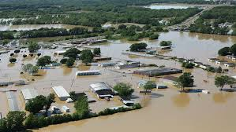
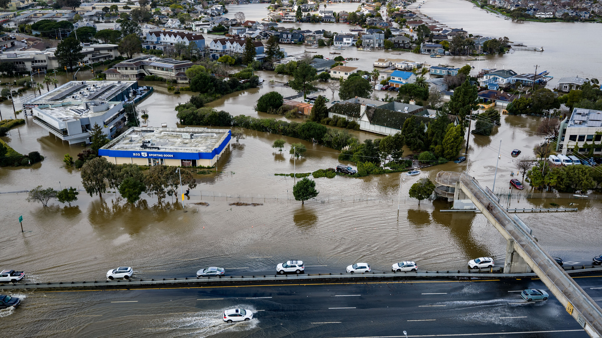
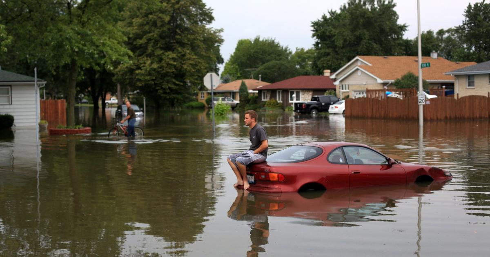

Understanding flood risks and real disasters in Turkey



Floods occur when water covers normally dry land. They can destroy cities, homes, and infrastructure within minutes and cause major loss of life.
Over 80 people died. Entire districts were destroyed by extreme rainfall.
Urban flooding killed over 30 people and caused massive damage.
Extreme rainfall flooded streets and caused deadly destruction.